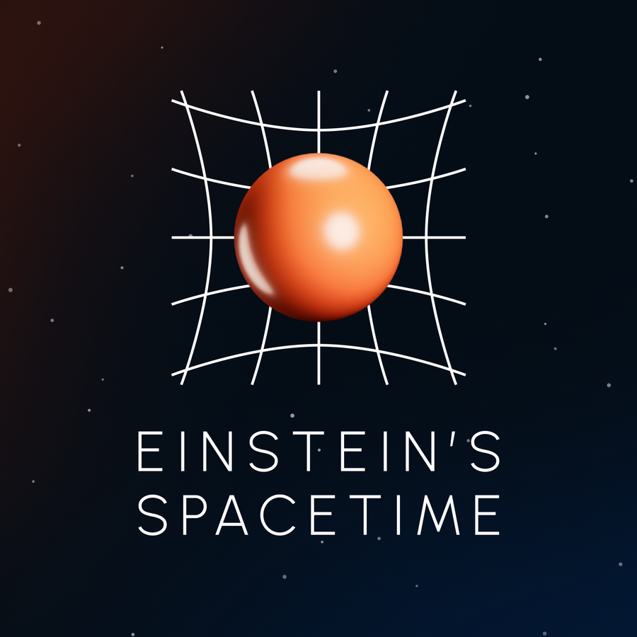

VR & visualization
Visualizing physics in virtual reality
I build virtual reality experiences to explain and explore physics. The two completed simulations are below, both published. More are in development — if you would like to hear about those, get in touch.
Simulation 1
Polarizations of gravitational waves
Under my leadership, the POINT collaboration developed animations which illustrate how the different polarizations of gravitational waves distort spacetime. Though waves in general relativity contain only two polarizations, waves in modified theories of gravity may consist of up to six polarizations. Here we illustrate how a tube of test particles would be distorted as each of those individual polarizations propagates along the direction of the red arrow. These animations were made from a virtual reality experience that is available on Github, and the paper about this experience is published in the ISVC 2024 proceedings. Within this experience the user has the option to explore how these polarizations affect different shapes of objects and to turn on multiple polarizations at once to observe how different effects would combine in specific modified theories of gravity.
Credit
To use these animations in talks, please credit [Schumacher et al., ISVC 2024; POINT collaboration].
Combinations
Selected combinations
Plus and cross General relativity
The GR waveform: the two tensor polarizations present in general relativity, propagating together.
All Beyond general relativity
All six polarizations possible in a generic modified theory of gravity propagating together.
The six possible polarizations
Each polarization on its own
For each polarization the left frame is viewed from the front, face on to the tube. The right frame is viewed from a 45° angle, so we can see how the wave propagates down the tube.
Plus polarization Tensor
One of the tensor polarizations present in general relativity. All distortion is perpendicular to the direction of propagation.
Cross polarization Tensor
One of the tensor polarizations present in general relativity. All distortion is perpendicular to the direction of propagation.
Breathing polarization Scalar
A scalar polarization present in some modified theories of gravity. All distortion is perpendicular to the direction of propagation.
Longitudinal polarization Scalar
A scalar polarization present in some modified theories of gravity. All distortion is parallel to the direction of propagation.
X polarization Vector
A vector polarization present in some modified theories of gravity. Some distortion is perpendicular to the direction of propagation, some is parallel.
Y polarization Vector
A vector polarization present in some modified theories of gravity. Some distortion is perpendicular to the direction of propagation, some is parallel.
Simulation 2
General relativity in virtual reality
Under my leadership, the POINT collaboration developed a virtual reality experience which explores general relativity for the non-expert. This experience aims to convey the following learning objectives:
- We live in a 4-dimensional smooth and continuous fabric, called spacetime.
- The curvature of this spacetime is what we recognize as a gravitational field. As John Wheeler famously said, “Spacetime tells matter how to move; matter tells spacetime how to curve.”
In our simulation, users can move objects through a spatial grid and watch it deform in response to the mass. Likewise, they can explore time dilation by observing one clock slow down relative to another in the presence of a gravitational field.
Users carry out several activities which allow them to explore the relationship between mass, the strength of the gravitational field, and the effect on spacetime distortion. This simulation is available on the Meta store for use on Meta Quest headsets, and as an apk file on Github. For an assessment of how this simulation compares with other teaching methods for general relativity, see the paper we published in ASEE.
Credit
To use these animations or the program itself, please credit [Schumacher et al., ASEE 2023; POINT collaboration].

Curving spacetime
Users can move objects through a spatial grid and watch it deform in response to the mass.
Time dilation
Observing one clock slow down relative to another in the presence of a gravitational field.